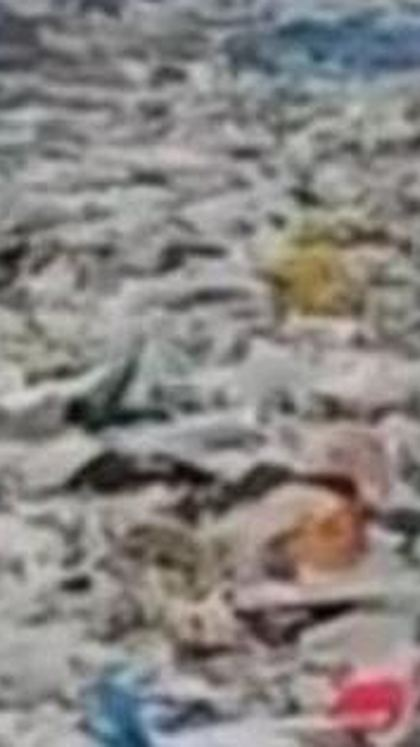
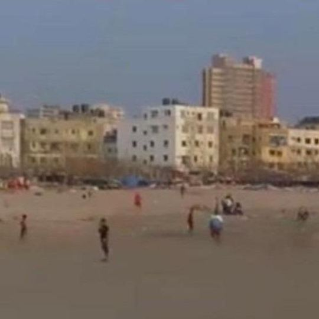
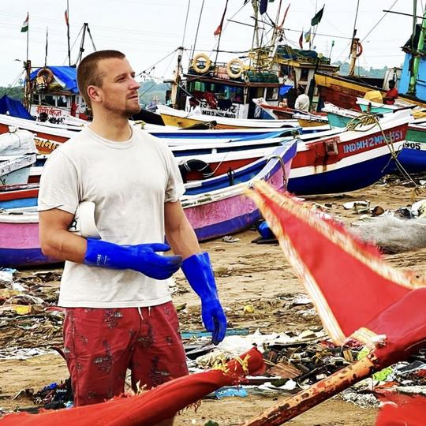
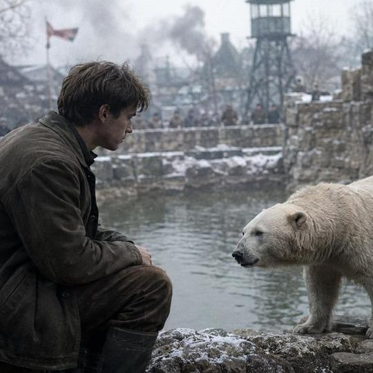
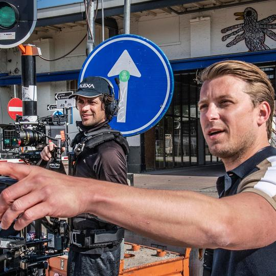
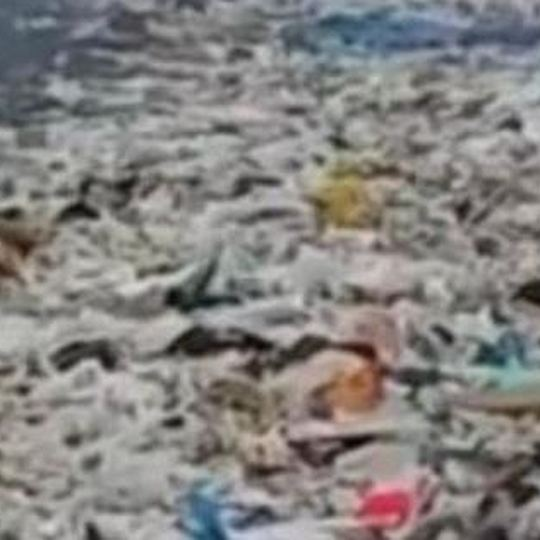
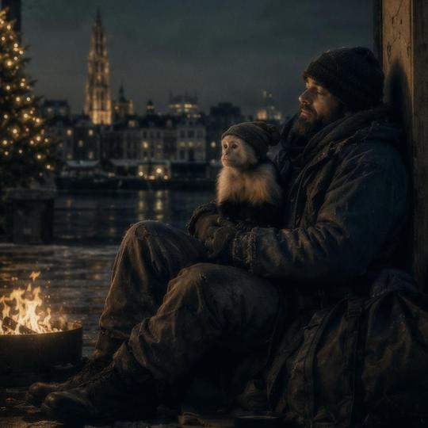
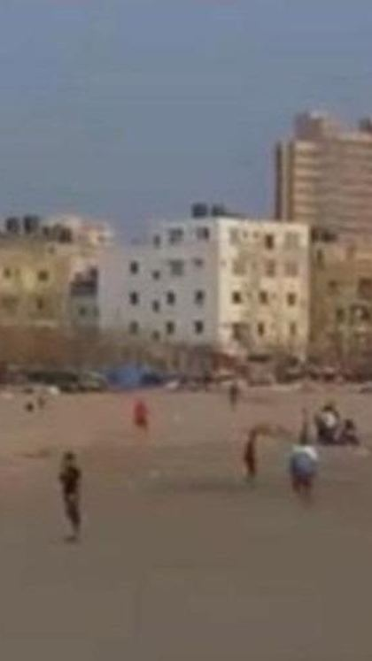
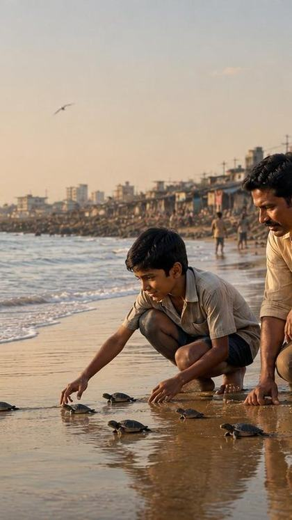

This is a beach.
Versova Beach, Mumbai. October 2015. Two and a half kilometres, buried under plastic.
Social plan · August 2026
This account does not need reach. It needs to look considered to the fifty people who check it after they have spoken to Bart. That is the only audience that matters right now, and it changes everything about what you post.
1 · Instagram
Images and text cards alternating, so the grid has a rhythm and every row reads on its own. Newest top left.

I am an ocean lover and feel that we owe a duty to our ocean to make it free of plastic.
Afroz Shah

Eight projects. Four stages of development. One question.
Slate 2026


#2A3841.Never two text cards next to each other, and never two images with the same colour wash in the same row. That is the whole system — nothing else has to be designed.
One post a week is enough. Posting more would be work for an audience that is not there yet.
2 · Stories
To be posted one after the other, in this order. The first screen asks a question without asking it, the second answers it and the third asks something back. Save as a highlight called Kachhua.

This is a beach.
Versova Beach, Mumbai. October 2015. Two and a half kilometres, buried under plastic.
Screen 1 · the hookNo explanation, no logo, no link. Only the image and the place. Anyone who sees this wants to know what happened next.

One hundred weeks later.
One lawyer started on his own. With his 84-year-old neighbour. That is 4,000 tonnes of waste gone.
Screen 2 · the answerSame frame, same place. The number arrives here, and it is the only number in the sequence.

This is what we are making a film about.
Kachhua. In co-production with SunnyMarch, London. Now in funded development.
See the slate →Screen 3 · the askLink sticker to the pitch page. This is the only screen with a brand name on it, which is exactly why it stands out.
3 · LinkedIn
From Bart's personal profile, not a company page — people fund people. The first post asks for nothing. The second asks for something small. The third makes the real ask. Anyone who has read the first two reads the third as a continuation rather than a sales pitch.
Five years ago I read about a lawyer in Mumbai who started clearing a beach on his own.
Not as a project. Not with a plan. He lived next to it, he saw what was lying there, and he started. For the first weeks he did it with his 84-year-old neighbour.
What stayed with me was not the heroism. It was the repetition. Coming back one hundred weeks in a row to the same two and a half kilometres, while the sea washes up new plastic every night. That is not a moment of courage. That is deciding a hundred times over that you are not going to stop.
I am a producer. By now I know that making a film looks exactly like that. Not the premiere, but the four hundredth time you explain the same story to someone who still says no.
I have been there three times since. I have stood on that beach with him, gloves on, and I have seen what is left of it.
That is what my first film of my own is about.
The most invisible part of my job is the part where everything is decided.
When a film is in cinemas, everyone can see the work. The shoot, the cast, the premiere. What nobody sees are the years before it: securing rights, finding a writer willing to take it on, getting three countries around a table because the budget does not close in any single one of them.
I have produced nineteen films and series. On almost all of them I came in when the money was already there.
Now I am doing it the other way round for the first time. Warana has eight projects in development. A war drama set in a zoo. A survival story in the Red Sea. A Christmas film with a monkey in Antwerp. And an English-language film in co-production with a London partner.
One of those eight is the one I have been working on for five years. It is the furthest along and the hardest to explain in a single sentence.
I am putting the whole slate online next week. If you work in film, financing or co-production and want an early look, say so and I will send it to you first.
Eight projects are online from today. This is what I am looking for.
Warana Film Company is developing eight titles: two English-language and international, four Dutch family and mainstream films, one drama series, and one film we are making together with bereaved families and 113 Suicide Prevention.
The furthest along is Kachhua, about the life of Afroz Shah, in co-production with SunnyMarch in London and in development with Grain Media. The writer is Ayub Khan Din. That one is in funded development.
What I am looking for is not one big cheque. Across eight titles we are talking about roughly twenty million, and that never comes from one place. It comes from funds, from rebates in three countries, from co-producers who bring their own national support, from pre-sales — and from a slice somebody has to be willing to carry.
Right now I am looking for three things: a co-producer for the Red Sea title, a Dutch distributor for the family films, and conversations with investors who understand that development takes years.
The slate is in the first comment. Twenty minutes is enough to know whether it is a fit.
One title stays out of all of this on purpose. See You Tomorrow is about suicide and is being developed with bereaved families and 113 Suicide Prevention. It belongs in a conversation with a broadcaster, not in a post built to be shared.
Socialplan · augustus 2026
Dit account heeft geen bereik nodig. Het moet er verzorgd uitzien voor de vijftig mensen die het opzoeken nadat ze Bart hebben gesproken. Dat is het enige publiek dat er nu toe doet, en dat verandert alles aan wat je post.
1 · Instagram
Beeld en tekstkaart om en om, zodat het raster ritme krijgt en elke rij op zichzelf te lezen is. Nieuwste linksboven.
Ik hou van de oceaan en vind dat we de plicht hebben hem vrij van plastic te maken.
Afroz ShahAcht projecten. Vier ontwikkelfases. Eén vraag.
Slate 2026#2A3841.Nooit twee tekstkaarten naast elkaar en nooit twee beelden met dezelfde kleurwaas in dezelfde rij. Dat is het hele systeem — verder hoeft er niets ontworpen te worden.
Eén post per week is genoeg. Meer posten is werk voor een publiek dat er nog niet is.
2 · Stories
Achter elkaar te plaatsen, in deze volgorde. Het eerste scherm stelt een vraag zonder hem te stellen, het tweede beantwoordt hem, het derde vraagt iets terug. Bewaren als highlight onder de naam Kachhua.
Dit is een strand.
Versova Beach, Mumbai. Oktober 2015. Twee en een halve kilometer, bedolven onder plastic.
Scherm 1 · de haakGeen uitleg, geen logo, geen link. Alleen het beeld en de plek. Wie dit ziet wil weten wat er daarna gebeurde.
Honderd weken later.
Eén advocaat begon in zijn eentje. Met zijn buurman van 84. Er ligt nu 4.000 ton minder afval.
Scherm 2 · het antwoordZelfde kader, zelfde plek. Het getal komt hier pas, en het is het enige getal in de reeks.
Hier maken we een film over.
Kachhua. In coproductie met SunnyMarch, Londen. Nu in gefinancierde ontwikkeling.
Bekijk de slate →Scherm 3 · de vraagLinksticker naar de pitchpagina. Dit is het enige scherm met een merknaam erop, en daarom valt het op.
3 · LinkedIn
Vanaf Barts persoonlijke profiel, niet vanaf een bedrijfspagina — mensen financieren mensen. De eerste post vraagt niets. De tweede vraagt iets kleins. De derde stelt de echte vraag. Wie de eerste twee heeft gelezen, leest de derde als een vervolg en niet als een verkooppraatje.
Vijf jaar geleden las ik over een advocaat in Mumbai die in zijn eentje een strand ging schoonmaken.
Niet als project. Niet met een plan. Hij woonde ernaast, hij zag wat er lag, en hij begon. De eerste weken deed hij het samen met zijn buurman van 84.
Wat me bijbleef was niet de heldenmoed. Het was de herhaling. Honderd weken achter elkaar teruggaan naar dezelfde twee en een halve kilometer, terwijl de zee elke nacht nieuw plastic aanspoelt. Dat is geen moment van moed. Dat is honderd keer opnieuw besluiten dat je niet stopt.
Ik ben producent. Ik weet inmiddels dat een film maken daar precies op lijkt. Niet de première, maar de vierhonderdste keer dat je hetzelfde verhaal uitlegt aan iemand die nog nee zegt.
Ik ben er sindsdien drie keer naartoe geweest. Ik heb met hem op dat strand gestaan, met handschoenen aan, en ik heb gezien wat ervan over is.
Daar gaat mijn eerste eigen film over.
Het onzichtbaarste deel van mijn vak is het deel waar alles wordt beslist.
Als een film in de bioscoop draait, ziet iedereen het werk. De opnames, de cast, de première. Wat niemand ziet zijn de jaren ervoor: rechten verwerven, een schrijver vinden die het aandurft, drie landen aan tafel krijgen omdat het budget in geen enkel land op zichzelf rondkomt.
Ik heb negentien films en series geproduceerd. Bij bijna allemaal kwam ik erbij toen het geld er al was.
Nu doe ik het voor het eerst andersom. Warana heeft acht projecten in ontwikkeling. Een oorlogsdrama in een dierentuin. Een survivalverhaal in de Rode Zee. Een kerstfilm met een aapje in Antwerpen. En een Engelstalige film in coproductie met een Londense partner.
Van die acht is er één waar ik vijf jaar aan werk. Die staat het verst en die is het moeilijkst uit te leggen in één zin.
Ik zet volgende week de hele slate online. Als je in film, financiering of coproductie zit en er eerder naar wilt kijken: laat het weten, dan stuur ik hem vast toe.
Acht projecten staan vanaf vandaag online. Dit is wat ik zoek.
Warana Film Company ontwikkelt acht titels: twee Engelstalig en internationaal, vier Nederlandse publieks- en familiefilms, één dramaserie en één film die we samen met nabestaanden en 113 Zelfmoordpreventie maken.
Het verst gevorderd is Kachhua, over het leven van Afroz Shah, in coproductie met SunnyMarch in Londen en in ontwikkeling met Grain Media. De schrijver is Ayub Khan Din. Die titel zit in gefinancierde ontwikkeling.
Wat ik zoek is niet één zak geld. Voor acht titels gaat het om ongeveer twintig miljoen, en dat komt nooit van één plek. Het komt uit fondsen, uit rebates in drie landen, uit coproducenten die hun eigen landensteun meebrengen, uit voorverkoop — en uit een deel dat iemand moet durven dragen.
Concreet zoek ik nu drie dingen: een coproducent voor de Rode Zee-titel, een Nederlandse distributeur voor de familiefilms, en gesprekken met investeerders die begrijpen dat ontwikkeling jaren duurt.
De slate staat in de eerste reactie. Twintig minuten is genoeg om te weten of het bij je past.
Eén titel blijft hier bewust buiten. Tot Morgen gaat over zelfdoding en wordt ontwikkeld met nabestaanden en 113 Zelfmoordpreventie. Die hoort thuis in een gesprek met een omroep, niet in een post die gemaakt is om gedeeld te worden.